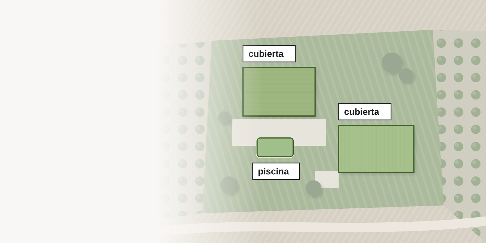
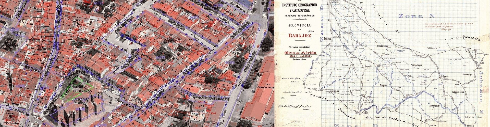
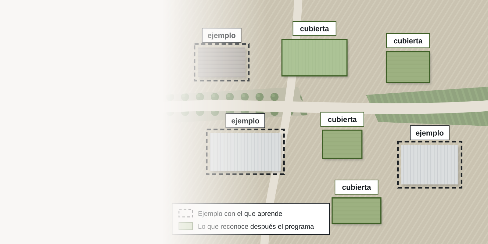
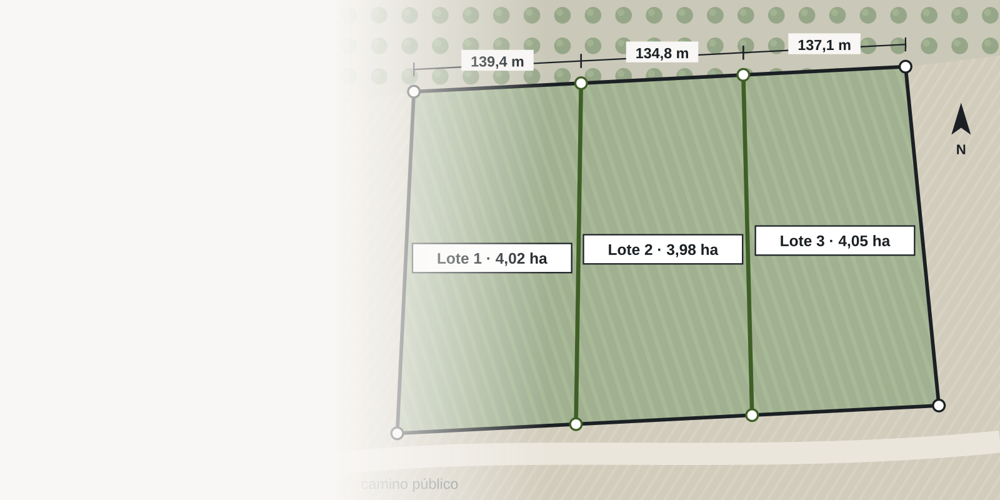
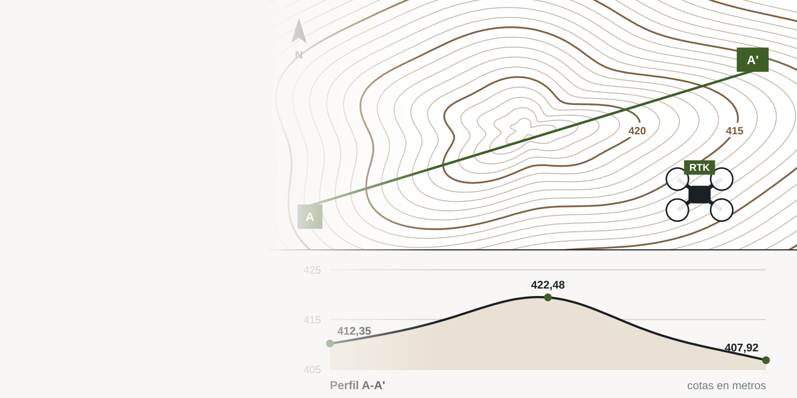
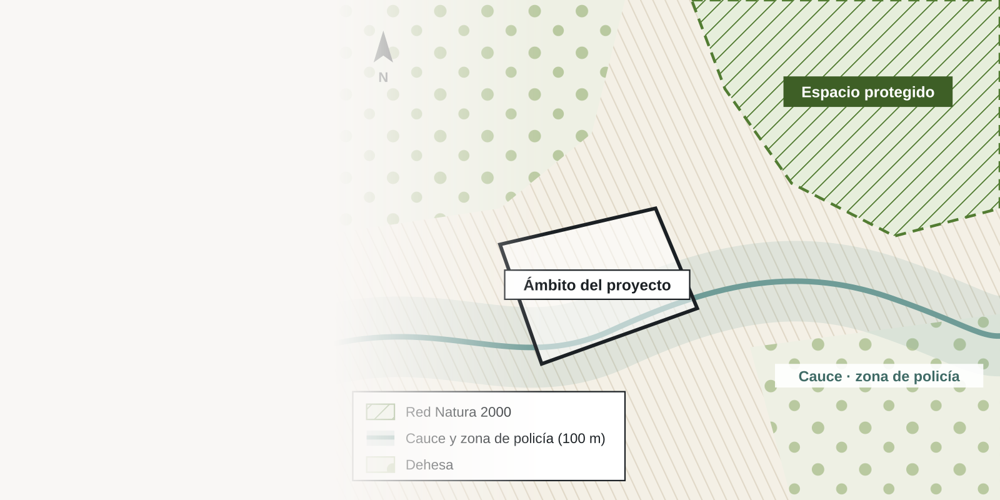

-

Catastro al día, municipio a municipio
Desde 1987 nuestros técnicos actualizan el Catastro junto con los organismos que lo gestionan. Ahora, además, se apoyan en un programa de teledetección desarrollado por nosotros.
-

Construcciones que no constan en el Catastro
Nuestro programa compara una imagen reciente con la cartografía catastral, parcela a parcela, y señala dónde parece haber una construcción o una piscina que falta.
-

Gabinete catastral
Preparamos el GML de su finca, el fichero con sus coordenadas que pide la notaría, y lo necesario para corregir en el Catastro una superficie o un lindero.
-

Teledetección con IA para otros usos
Hoy el programa busca construcciones y piscinas. Como es nuestro, se puede volver a entrenar para buscar otras cosas que se distingan bien desde el aire.
-

Segregaciones y particiones
Si va a dividir una finca o a repartir una herencia, comprobamos la unidad mínima de cultivo, medimos la finca y preparamos el plano y el GML de cada parte.
-

Mediciones con dron
Con el dron hacemos nivelaciones y curvas de nivel, y ortofotos de detalle cuando la oficial se ha quedado antigua.
-

Estudios de impacto ambiental
Redactamos estudios de impacto ambiental para proyectos que tienen que pasar la evaluación ambiental ordinaria.
-

Valoraciones y peritajes
Valoramos fincas rústicas y urbanas para herencias, extinciones de condominio, compraventas o un juzgado, con el cálculo completo en el informe.
Cómo trabaja la teledetección
El plano es un ejemplo dibujado, con seis parcelas. Pulse en la leyenda para encender o apagar cada capa.
Donde se ve construido algo que no consta, sale una alerta con la referencia catastral. Hay que comprobarla, y si algo entra o no en el Catastro lo decide el organismo que lo gestiona.
- A1Parcela 412 · nave que no consta
- A2Parcela 414 · piscina que no consta
- A3Parcela 415 · posible ampliación de la vivienda
- D1Parcela 416 · descartada en la revisión: era escombro
Lo que hacemos
Catastro
Es el trabajo de siempre de nuestros técnicos: mantener al día el Catastro de los municipios y resolver los problemas catastrales de cada finca.
Proyectos
Son trabajos que salen del mismo oficio, y nos los encargan particulares, empresas y administraciones.
- Teledetección con IAEl mismo programa, que se puede entrenar para buscar otras cosas.
- Segregaciones y particionesDividir una finca o repartir una herencia.
- Mediciones con dronNivelaciones, curvas de nivel y ortofotos de detalle.
- Impacto ambientalEstudios para la evaluación ambiental de un proyecto.
- Valoraciones y peritajesFincas rústicas y urbanas, para herencias, compraventas o un juzgado.
- Digitalización y datosPlanos, archivos y tomas de datos en campo.
Cómo va un encargo
Casi siempre empieza con un correo o una llamada. Si hay que ir al terreno, vamos, y el resto se hace en la oficina.
Lo que no se haya podido resolver también va en la entrega, explicando por qué.
Qué mandarnos para empezar
Mándenos la referencia catastral, o el municipio con el polígono y la parcela, y cuéntenos qué quiere hacer. Le diremos qué hace falta y cuánto costaría. Si no es un trabajo que podamos hacer bien, se lo decimos en la primera respuesta.
- emiliocontadorbrito@gmail.com
- Calle Matilde Tagle Ortiz, 28, 5.º D, 06006 Badajoz